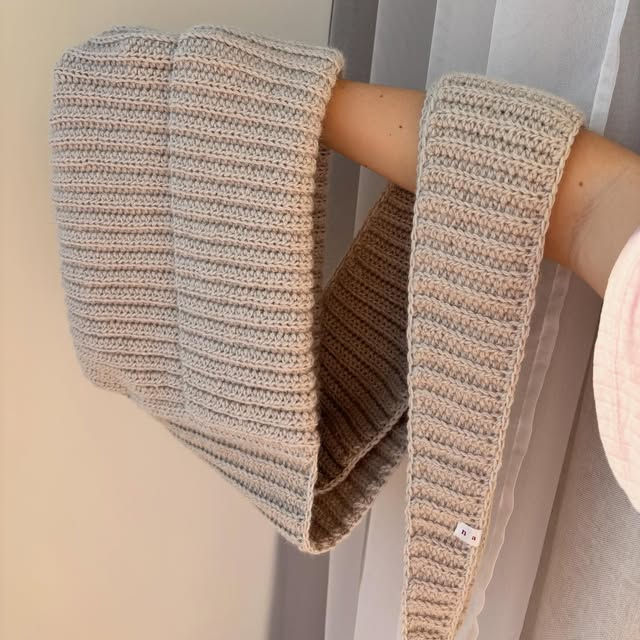
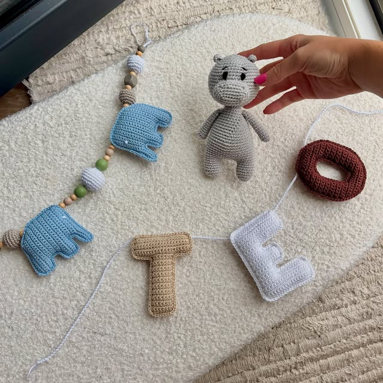
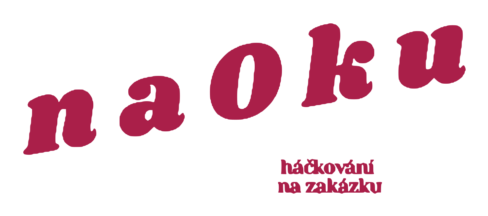

háčkování na zakázku
Z přírodních materiálů, ručně, kousek po kousku.
Nebojte se přijít i s vlastní představou.
Co háčkuju
Z dílny
Výběr toho, co poslední dobou vzniklo. Kliknutím otevřeš příspěvek na Instagramu.
Všech 80+ příspěvků na Instagramu ↗Jak to probíhá
- 1
Napíšeš, co tě napadá
Taška na léto, kapuce na zimu, hračka pro miminko, nebo něco, co ještě nikdo nemá. Klidně jen fotka pro inspiraci.
- 2
Domluvíme materiál a barvu
Háčkuju z bavlny, lnu a vlny. Pošlu ukázky přízí, vybereš, poradím, co se k čemu hodí.
- 3
Uháčkuju a pošlu
Každý kus vzniká ručně, takže počítej s pár týdny. Cestou ti ukážu, jak roste.
Objednávky jdou přes zprávy na Instagramu